Accommodation in Pretoria & Johannesburg
- Sheraton Hotel Arcadia - Pretoria
- 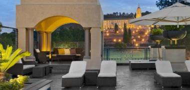
The Sheraton Pretoria Hotel offers 175 luxurious rooms and suites, all designed to guarantee maximum comfort and hospitality from the moment you arrive. The hotel includes a Health Club with gym and saunas, an outdoor swimming pool and massage rooms. The Magnolia Restaurant is open for all day dining for sumptuous buffets at breakfast, lunch and dinner. As a light meal alternative the ever-lively Tiffins Bar & Lounge caters for all tastes and serves an excellent afternoon tea.
From the hotel's Union Terrace you have a splendid view over Pretoria's famous Union Buildings, official seat of South Africa's government.
- Classique Court Hotel Arcadia - Pretoria
- 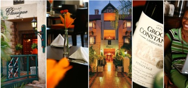
Four star accommodation nestled in the up-market, diplomatic suburb of Arcadia, the Court Classique Suite Hotel, offers ideal corporate accommodation in Pretoria with easy access to the major Gauteng business centers and Loftus Stadium. Our four star hotel is close to suburb restaurants, cinemas, shops and cultural attractions.
Nestling in upmarket diplomatic suburb of Arcadia, Pretoria, the Court Classique Suite hotel offers easy access to the major Gauteng business centres, as well as a host of superb restaurants, cinemas shops and cultural attractions.
- African Pride Irene Country Lodge, Centurion - Pretoria
- 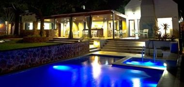
Luxury accommodation in the heart of Gauteng, South Africa’s Economic Capital, the historical village of Irene, Centurion is known for the long and winding oak-lined country lane where cows graze in green pastures, you will arrive at a haven of peace and tranquillity, and you will definitely not think that this hotel is in Centurion, Pretoria or Gauteng for that matter!
With lakeside views to rival most paintings, African Pride Irene Country Lodge is a luxury upmarket hotel, this hotel boasts 74 spacious luxury accommodation rooms, a fine dining restaurant, conference, function and wedding venues, and also boasts a luxurious upmarket day spa called Camdeboo Day Spa.
- Zebra Country Lodges - Pretoria

True South African hospitality awaits guests at Zebra Country Lodge. Hidden away in a lush bushveld setting, lodge is only 30 km from Pretoria and 85 km from Johannesburg International Airport.
With splendid views over far off hills and a series of running streams (Zebra Mountain Lodge); a lakeside with a distinct ambience. (Zebra Stables)
- Birdwood Boutique Hotel - Pretoria
- 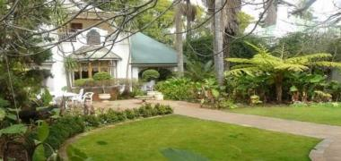
Birdwood is the only 5 Star Accommodation close to (300 metres) from Loftus Stadium and various embassies in Pretoria, Gauteng, South Africa. We are also close to the Hatfield Shopping and Entertainment Centre (a five minute walk) as well as the Virgin Active Health and Fitness Centre AND THE NEW Gautrain station in Hatfield.
Location
Finding Pretoria Accommodation is easy with Birdwood! Situated within walking distance of 30 Embassies and Hatfield Shopping Centre. Soaring molded ceilings period wooden doors and windows, stained glass, antique furniture and an imposing staircase give the cheerful Birdwood interior a warm glow.
- Garden Court Hotel - Pretoria
- 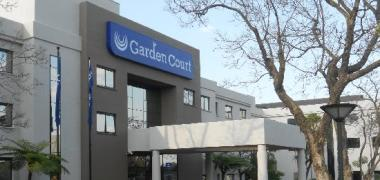
Light and modern, Garden Court Hatfield is located in the trendy suburb of Hatfield in Pretoria, set against a backdrop of historic gardens, parks and the jacaranda trees that gave the city its name of the Purple City. With easy access to major highways, the Pretoria CBD and numerous government embassies, as well as Menlyn Shopping Centre, the Gautrain and a host of other landmarks, it is easy to see why business and leisure travellers choose this hotel for their stay in the city.
- Isiphiwo Boutique Hotel - Pretoria
- 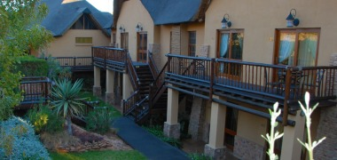
siphiwo is privately owned and prides itself in its warm country like hospitality and distinct attention to detail. The
rooms are spacious, modern and uniquely styled with custom made furniture and art deco pieces. Amenities and facilities
are far above what is normally expected with luxuries such as under floor heating, DSTV, Direct dial telephones and
coffee / tea making facilities. Isiphiwo Boutique Hotel & Spa caters for romantic week end getaways, corporate getaways
and leisure guests. Testament to our service and quality is our official 4 Star Rating for our Boutique Hotel and a Five
star rating for our conference centre.
- City Lodge Hotel - Pretoria
- 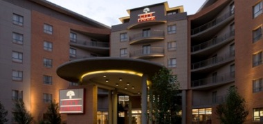
Located in the new Lynnwood Bridge complex, City Lodge Lynnwood adds a much-needed business and leisure accommodation dimension to the eastern side of Pretoria. Its 205 tastefully decorated bedrooms are complemented by three board/meeting rooms, a coffee shop, a fitness room, a swimming pool and wireless internet throughout the hotel. The hotel is close to the world renowned CSIR, a short drive from the Union Buildings, Pretoria’s CBD and the city’s other cultural, shopping and entertainment facilities. It is also ideally situated for easy freeway access to Johannesburg, OR Tambo Airport and Polokwane.
- Leriba Hotel - Pretoria
- 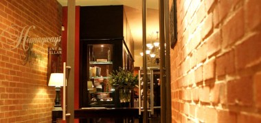
The Leriba Hotel Group offers unequalled hospitality and an in depth understanding of every guest's needs, providing a haven of natural elegance with luxury accommodation, prompt service and superior facilities. The group consists of three luxury 4 and 5 star hotels and lodges namely:
We are a proud Gold Green Heritage member. In addition our health and safety consultant and trained staff ensure that we offer a safe and healthy environment for our guests
- villasterne Hotel - Pretoria
- 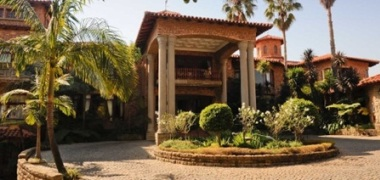
The magnificent Italian-styled architectural masterpiece, Villa Sterne Boutique Hotel and Health Spa is set on the highest ridge with breath-taking views overlooking the exuberant Jacaranda City, Pretoria – the capital city of South Africa. The ultimate venue befitting the description of being your "home away from home". Guests are afforded the elegance, privacy and comfort of a luxury modern-day existence in our gracious old-world setting.
The Villa Sterne Boutique Hotel and Health Spa has been operating for nearly 15 years. We have hosted royalty, heads of state, corporate executives and many other quests over the years. Villa Sterne's ultimate accommodations, conferencing, wedding and banqueting venue offers uncompromising service and hospitality.
- Southern Sun Hotel - Pretoria
- 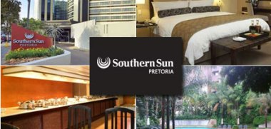
Sophisticated and elegant, Southern Sun Pretoria is situated in the stately Gauteng city of Pretoria. This contemporary hotel is favoured by politicians, diplomats and embassy officials, due to its proximity to local embassies, government offices and the CBD of South Africa’s administrative capital. For leisure travellers meanwhile, a host of attractions are also found nearby.
Pretoria Botanical Gardens, National Zoological Gardens, State Theatre, Wonderboom Nature Reserve, Voortrekker Monument, Transvaal Museum and many other landmarks can easily be explored during a stay in Pretoria.
- Protea Balalaika Hotel - Sandton JHB
- 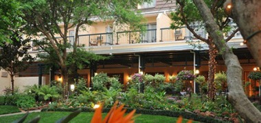
The Protea Hotel Balalaika on Maude Street, in Sandton, is located in Johannesburg’s economic heartland. The hotel’s charming colonial theme is accentuated with wooden elements and delicate floral accents. The resident pianist conjures images of the hotel’s history, which is celebrated through artwork, framed press clippings and memorabilia of bygone days.
Each of the 330 classically-styled rooms make guests feel as though they never left home – with a king-size bed, LCD television, electronic safe and a full en-suite bathroom with a walk-in shower. Business executives are catered to with a desk, office chair and international plug points. Complimentary high-speed Wi-Fi accessible throughout the hotel, and the Wi-Fi station situated in the lobby provides convenience for guests requiring instant access to the internet.
- Moloko Executive Apartments & Hotel - Sandton JHB
- 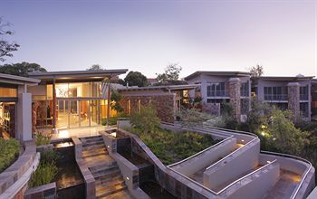
Moloko Executive Apartments and Hotel offers five star accommodation in the heart of Sandton, Johannesburg’s economic and commercial hub. Whether you’re a corporate guest or a leisure traveller, our sophisticated and elegant accommodation options are ideally suited to your needs.
Revel in our tasteful, individually appointed rooms and enjoy an array of modern conveniences and outstanding facilities to make your stay a memorable one. We cater for both short and long-term stays and pride ourselves on always offering our guests the best possible rates available.
- Radisson Blu Gautrain Hotel - Sandton JHB
- 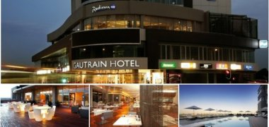
Stay in the heart of Africa’s richest square mile at this exclusive accommodation. Conveniently located only 30 kilometres from OR Tambo International Airport, this Johannesburg hotel is home to exquisite rooms and suites, a dazzling outdoor pool and multiple on-site restaurants. Host a gala in the in the largest function room, which spans 320 square metres, or employ one of the other meeting rooms for a conference or seminar
- Southern Hotel - Sandton JHB
- 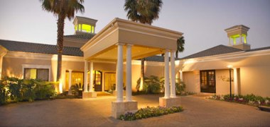
Southern Sun Sandton is an impressive French-Colonial luxury hotel, which is conveniently situated near the Sandton shopping and business centre.
Of 122 rooms at this Sandton hotel, 52 are executive suites, These suites have one or 2 bedrooms, lounge and dining area, as well as a self-contained kitchenette. Such facilities make these suites ideal for longer-staying guests.
The fully carpeted, air-conditioned and graciously styled rooms are equipped with a double bed or beds, colour TV, en-suite bathroom with bath and shower, tea and coffee making facilities and all rooms and suites are serviced with 24 hour room service and fitted with key card locks.
- Mecure Hotel - Midrand JHB
- 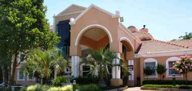
Stop at Mercure Johannesburg Midrand Hotel to discover the wonders of Johannesburg. The hotel offers a high standard of service and amenities to suit the individual needs of all travelers. Airport transfer, car park, elevator, Wi-Fi in public areas, safety deposit boxes are there for guest's enjoyment. Designed and decorated to make guests feel right at home, each room comes with in room safe, mini bar, shower, satellite/cable TV, internet access – wireless (complimentary). Enjoy the hotel's recreational facilities, including garden, before retiring to your room for a well-deserved rest. Discover all Johannesburg has to offer by making Mercure Johannesburg Midrand Hotel your base.
- Executive Hotel - Midrand JHB
- 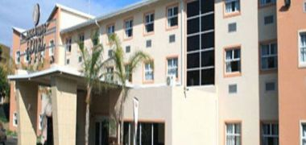
The Midrand Executive Hotel in Midrand, Johannesburg offers business travellers the most convenient accommodation and conference venue, situated across from the ever popular Gallagher Estate. The hotel offers easy access to highways, airports and Gautrain stations, Sandton CBD, Sandton financial district and the International Convention Centre.
The Midrand Executive Hotel also features a buffet restaurant which is open to the public as well as a Ladies Bar, business lounge and 24hr secure parking.
- Premier Hotel - Midrand JHB
- 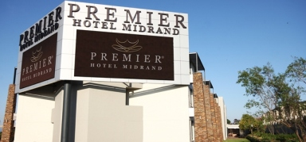
PREMIER HOTEL MIDRAND LOCATED HALFWAY BETWEEN JOHANNESBURG AND PRETORIA,Midrand's location is one of its great attributes. It is located halfway between Johannesburg and Pretoria, the two major cities in the Gauteng province. The main artery in Gauteng, the N1 freeway, runs straight through the middle of Midrand.Midrand, once a small halfway station has rapidly grown into a business hub and is the home for the head offices and distribution centres for a large number of well-known businesses. It is identified as one of the 8 tourism nodes in the Johannesburg area and home to large-scale industries such as textiles and motor vehicles.
- Protea Hotel - Midrand JHB
- 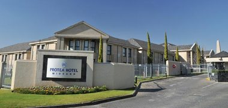
The 4 star Hotel promises a superb conferencing experience. The conference room can accommodate up to 220 GUESTS at a time or it can be divided into three differing sizes to suit your needs.
In addition the Hotel also offers an Executive Boardroom that can seat up to 12 delegates , 2 additional Boardrooms that can seat 14 delegates each and an Executive Office that can seat up to 6 delegates, for smaller meetings.
Half Day and Full Day Conference Packages are available. These include lunch and tea/coffee breaks, venue hire, refreshments in the venue, notepads and pens as well as all standard equipment. Packages also include a Data-projector and PA System, with podium, lapel & roving microphone available on request.